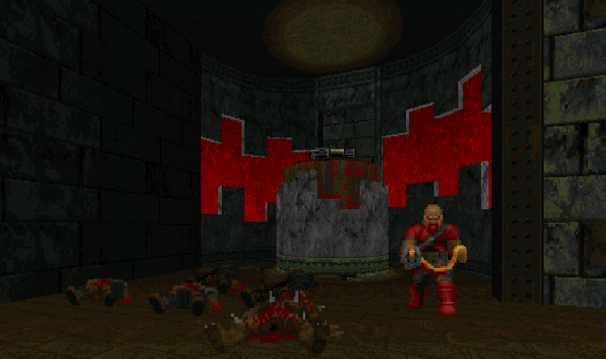
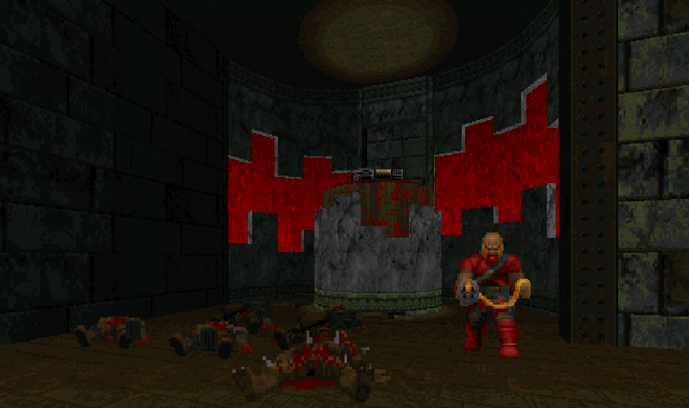

This wad is something I have been actively working on since about November 2021. It currently consists of two maps - MAP01, and MAP02 - though I plan on adding more in the future.
The motivation behind making this wad was purely educational. I have spent a considerable amount of time making UDMF wads. Working on this project has given me a chance to use the Boom format.
I recommend using PRBoom+ with the PRBoom+ Launcher to play this wad. You will also need a copy of Doom 2 which you can buy on Steam or GOG.


 
